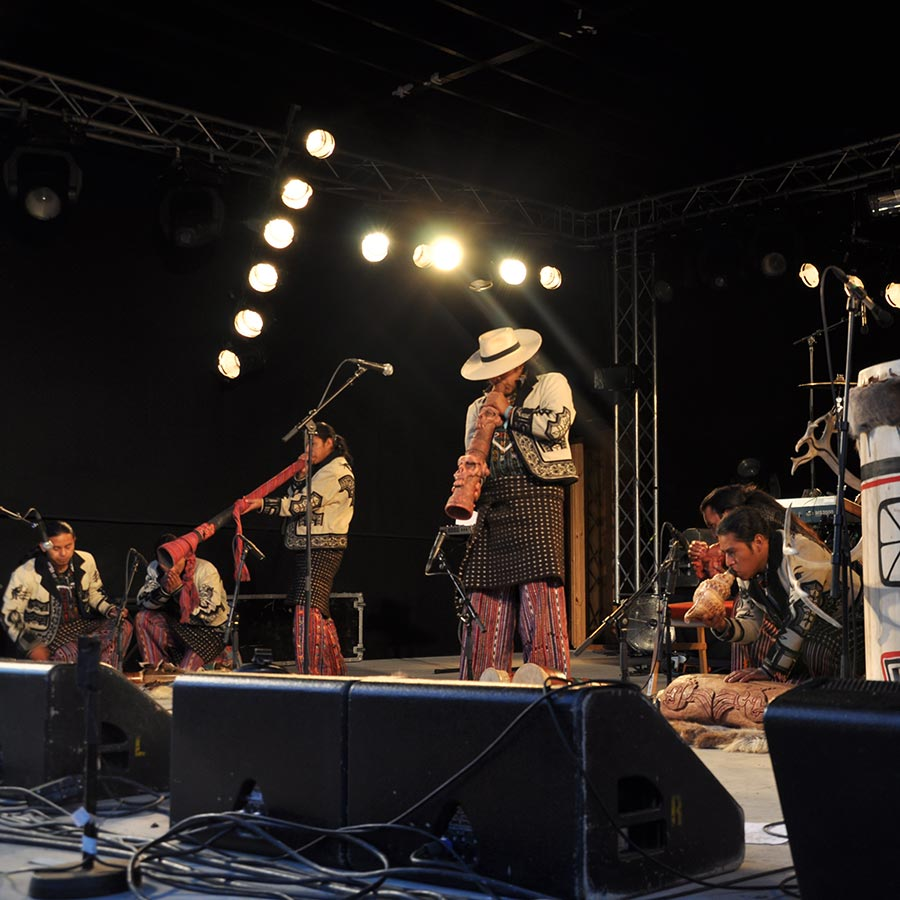

SOTZ'IL
GUATEMALA
Música y baile de la cultura maya prehispánica en manos de nobles herederos.
“Sotz’il” significa “murciélago” en la lengua maya del pueblo kaqchikel. Y el murciélago fue el animal sagrado para esta comunidad prehispánica que sobrevive gracias al trabajo de un grupo de jóvenes músicos y bailarines que vienen difundiendo las ancestrales artes de su pueblo desde hace más de 17 años. Se formaron en el altiplano de Guatemala y han girado por el mundo mostrando el fruto de su valiosa recopilación. Melodías de tambor y pito, así como otras construidas a partir del juego de voces de sus integrantes, complementadas con cuerpos de baile, aparecen en presentaciones de alto valor patrimonial.